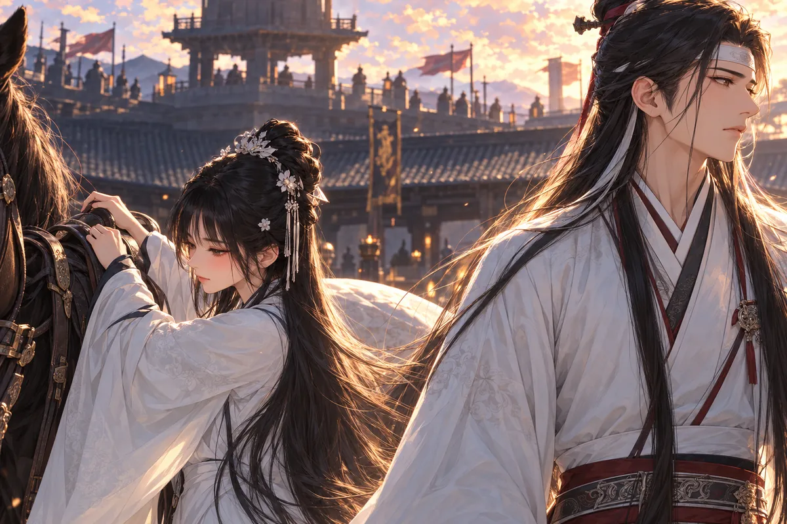
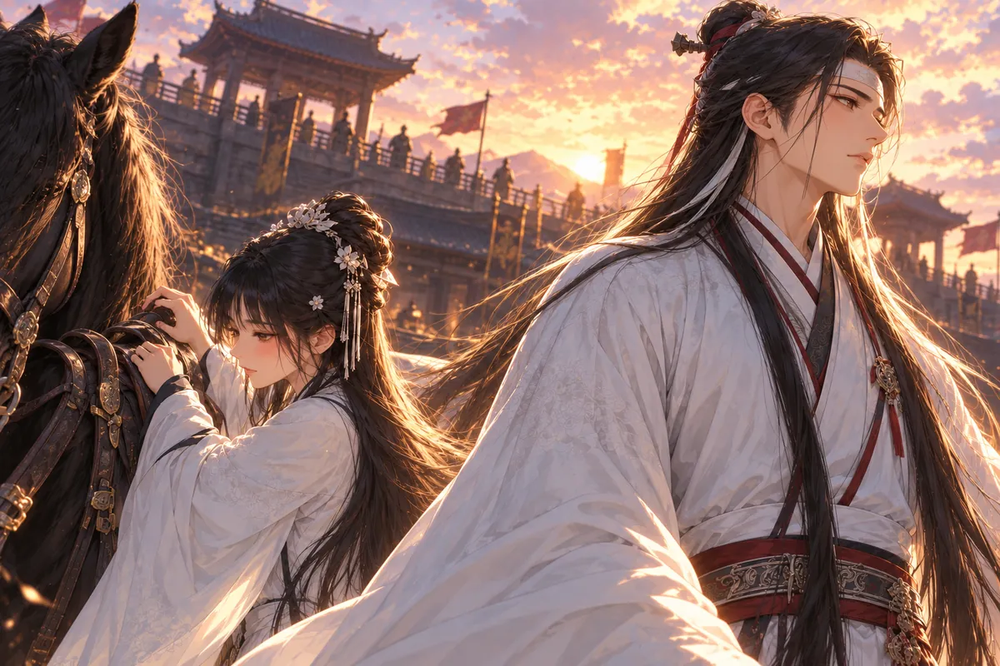

語彤把書合上，問師父，故事寫下來，是不是就不會被忘掉。
月老正剝糯米糍的包裝。手停了一下，才說，要看誰讀，誰寫。
「那如果寫錯了呢？」
「還是會有人相信。」
語彤看他的臉。她早習慣這個年輕師父偷懶、吃零食、躲女神，卻第一次注意到，說往事時，他眼裡有些東西不會跟著笑。
她把書重新開啟，留出空白頁。
「那你講，我記。」
月老把最後一口甜點吃完，沒有立刻答。
語彤等了一會兒。「你不想講，可以不要講。」
「不是。」
「那我先去拿水？」
他搖頭，望向遠處。她把手收回，坐在原處。
「很久了。」月老終於說。
「我知道。」
「有些地方，我也得想一下。」
語彤點頭。「你慢慢說。」
月老坐正，手指碰了碰已空的甜點紙，才將那個很久以前的名字說出來。
＊ ＊ ＊
書裡只有片段，月老說，也有捕風捉影。
比如沒寫七夕是他的忌日。
語彤瞪大眼，嫌這死法太不浪漫。他笑了一下，把日子往更早處說。
她原本只是想查師父的故事，書上寫得零碎，有些段落像神話，有些又像誰隨口講過便被留下。她比著頁面問，他便一個個挑，哪些不對，哪些沒寫到。
七夕是忌日一說，整本書的輕巧都變了。語彤把頁角放平，不再用方才那種催故事的口氣。
月老倒沒有要她難過。他問想先聽哪段，她說從前，真正的從前，不要又用愛吃牛排這類話擋。
他看她，笑了一下。那時他還不是神，沒有紅線，也沒有一套能把戀人帶過輪迴的法；能做的事，得靠門生、靠說服，還得靠一段真的走得出去的路。
語彤把書往旁邊放。師父開口後，眼前那片海便慢慢退遠，換成一條積滿塵土的邊境道路。
那時，他是楚墨的宗主，帶門生推行自由戀愛。楚國漸弱，秦國卻包容百家，他們決定越過邊境，到能發展學問的地方。
隊伍走了很久。衣袖沾塵，天色壓向道路，還有半日才到秦境，追兵卻先到了。
門生喊宗主。
有人還抱著竹簡，不肯先跑，覺得留下便能替他多擋一點。岳夏澤讓他們往前，聲音不高，卻使幾個猶豫的腳步都停了一下。
他沒有時間把道理講完。到秦境還差半日，走慢了，追兵就能把這些人的來路和去路一起截掉。那些學問不是裝在自己一個人身上，既然帶出來，便不能全等他決定。
飛雪在身下動了動，耳朵轉向後方。岳夏澤按住牠，讓隊伍看見自己還能站穩，不必一面跑一面回頭。
一位年輕門生抬眼，他只再說一次走。對方終於轉身，衣角掃起路邊的灰，其餘幾人也跟著。
背影離開後，岳夏澤才勒住馬，迴向那股越來越清楚的塵。
追兵揚塵而來。
他讓飛雪轉身，自己迎上去。那些門生還年輕，帶來的竹簡和想法也還年輕，不該在這條路上被迫停下。
後來，他抵達秦國首都。
路上的灰仍在衣服裡，拍不乾淨，飛雪鬃毛也亂了。他走近城門，先看守衛，再看城內來往的人，聽那些口音和自己熟悉的略有不同。
來到一個肯容學問的地方，不代表立刻有人懂自己。岳夏澤知道，名字得重新報，門生得重新安頓，兼愛與自由相戀，也不會只因君王愛才便自然長出空間。
他把手從韁上挪開一點，讓馬慢下，等前面的人確認。背後的路已經走完，眼前卻沒有一個現成的位置。
有人問楚人來此做什麼，他答得清楚，沒有因為奔逃的狼狽便把學問也說小。既然走到這裡，能說的便要說，能教的也要繼續教。
夕光落在城牆，岳夏澤抬頭看，終於在那片陌生的影裡，找了一條自己願意走進去的街。
巍峨的城牆擋住夕光，他抬起頭，心裡仍是兼愛與相愛的願望。此刻，他還不知道，這座終於走到的城，會給他一個官職、一個愛人，以及一扇最後不肯逃出的牢門。
＊ ＊ ＊
劉大牛被按在街上，仍喊翠花。
富商烏氏說，他們還沒成婚，自己已買下姑娘。給一頭牛，另找別人便是。
大牛的臉貼著地面，仍想抬頭看翠花。按住他的手很重，他用力掙了一下，沒能起身，反而被更用力壓回。
翠花喊他，他便答，答得太急，聲音都變了。旁邊的人看著，知道富商不好惹，腳步先往外讓，卻沒有誰能替兩人講一句算數的話。
烏氏把一頭牛說得很明白，像這就足夠把一段尚未正式成婚的相愛買走。大牛不接受，便成了不知分寸；翠花不願意，也像只是需要再被拉近一點。
岳夏澤站在稍遠處，聽見喊聲，先停下。他沒有隻憑憤怒就往前，轉向趙大人，問這種買賣在秦法裡算什麼。
對方說灰色地帶，他聽到的卻還有另一條清楚的界：平民能被欺，朝廷的人不能。
趙大人才在擔心，秦國以軍功為重，這麼大的右庶長官位給楚人，軍中會有微詞。岳夏澤卻說，秦王愛才，也方便替帶來的門生造冊。
如今，話題忽然換成富商的灰色買賣。
他聽完秦法，便走了過去。
「為何打我的兵？」
烏氏一愣。
站在眼前的人不像路過勸和。聲音穩，身邊又有趙大人，烏氏本來準備好的不關你事，便沒有立即說。
岳夏澤報了官職，再指大牛。伍長兩字一出，地上的人自己也愣，想問什麼，岳夏澤卻沒有看他，只讓富商先聽清。
烏氏問剛招是不是已經算，話還沒說得太露骨，對方就把受刑和走放到他面前。方才他拿兩個戀人的去留當選擇，如今輪到自己，只剩兩件都不好看的事。
他往後退，叫手下鬆開。大牛肩上的力一下沒了，卻還先看翠花，確認她能過來，才把身子撐起。
岳夏澤讓道，沒有拿這一場解圍多換幾聲感恩。他聽兩人互相叫，像剛才那條街終於留出一小段，讓原本就該在一起的人自己站到旁邊。
富商連聲道歉，方才的氣勢散得乾淨。
大牛爬起來，問為什麼幫他們。
「我喜歡看戀人幸福。」
大牛低頭，手裡沒有什麼可以送，想行禮又不知用哪種。岳夏澤讓他先站好，從軍的事講清，不是為了救他而說過便算，這個官職既替他擋了一次，也會帶來真正要做的工作。
大牛聽完，答得認真。他本來想保護的人就在身邊，願意先抓住一條不必只捱打的路。翠花沒有插話，只把他袖上的灰拍掉，像這個答應也要一起記。
趙大人看著，方才軍中的微詞仍可能存在，眼前的處理卻已經讓他看懂，這位楚人不是不知道秦國重什麼。
岳夏澤懂，才肯借那條律法先做一件自己認為該做的事。他轉身繼續走，身後的大牛終於能好好叫翠花，不用每叫一聲都把力氣拿去掙開別人的手。
岳夏澤讓他從軍。在這樣的秦國，若不想任人欺負，眼前能找到的路，便先走好。
趙大人看著他，終於明白朱雀將軍的名號並非虛傳。
翠花仍抓著大牛。岳夏澤轉身時，看見兩人的手沒有分開，嘴角便輕輕動了一下。
＊ ＊ ＊
語彤不懂，為什麼替大牛挑傍晚成婚。沒電燈，路不就看不清？
月老說起古時搶婚的陋習，說起黃昏的承諾，婚與昏的故事。語彤聽完覺得浪漫，又追問師父自己談過戀愛沒有。
月老說愛吃牛排，不一定要做廚師。
她不接受，繼續盯著他。
月老拿起甜點，準備用吃東西拖一點時間。語彤太熟悉這個動作，伸手把書合上，像怕他又從紙裡找出另一個能岔開的故事。
「講你自己的。」
他問神沒有戀愛史會不會失望。她說不會，立刻又補，但你這個表情就不像沒有。
師父望著她，終於放下那一口。那些故事他可以從秦法、從婚字講起，繞很遠，語彤卻偏要問人。
他想了片刻，先提飛雪。那匹白馬脾氣不好，換個人靠近，便先用耳朵與腳步表示不願；偏偏到了公主面前，所有平日要費力哄的事都不必做。
語彤一聽便笑，說馬都比你老實。月老沒有回嘴，眼前已是公主騎上馬時，朝自己回頭的樣子。
回憶裡，飛雪載著陽滋公主，脾氣竟格外乖。岳夏澤說牠平常兇，公主卻問，是不是牠覺得兩人般配。
他避開回答，說讓飛雪陪她出嫁。
話說完，飛雪正低頭，像完全不知道自己被安排了這麼遠的一趟。公主摸牠的鬃，手停了一下，才看回岳夏澤。
她沒有立即怪他避開。朝堂上已經有太多每一個字都得選好的回答，她出來，只想聽他一回不必對父王負責的話。
岳夏澤卻把出嫁講得太平穩，像只要先替她安排馬，心裡的事便沒有機會被問。公主知道，越是這樣，他越不是毫不在意。
她說楚國，說國勢，把那些不得不背在身上的原因先攤出來。他越聽越明白，所謂因他而起的危局，正好能逼一個信兼愛的人，替君王開啟滅魏的路。
公主聽他猜，臉色便變。不是因為他說錯，而是她不願連這次騎馬，都變成推動他違心的另一種說服。
趙韓已亡，秦兵尚需周轉。這樁與楚國的聯姻，是秦王要爭取的時間。
岳夏澤看穿了。那理由也在逼他愧疚，逼一個墨家弟子獻出滅國之策。

公主喝止他繼續猜。攻城滅國，對信奉兼愛非攻的人太難，她不希望他違心。
她只求出嫁前，陪她出宮騎一次馬。

兩個人，還有飛雪。
她把請求留得很小，沒有要他許下能取消婚事的承諾，也沒有把不可能做到的拿來問愛不愛。
岳夏澤看她的手。方才撫馬時很自然，說到只求一次，卻抓緊了韁，好像若說得太輕，連這一趟也會被當成可有可無。
他站在馬旁，能答的其實只有一個好字。偏偏越清楚只能給這麼少，越難立刻說出。
飛雪偏頭，鼻息靠近公主的袖。她笑了一下，把緊的手鬆開，等他。
岳夏澤終於伸手去扶。她下來時，裙邊擦過他的衣袖，兩人都沒有急著退。宮外還有一段路，他不知道那能留下什麼，只知道眼前這個不願他違心的人，正在等他陪一次。
岳夏澤望著她。這個如此小的請求，竟比朝堂上任何一道旨意，都讓他更難回答。
＊ ＊ ＊
連弩車輕了，秦王卻說還不夠。
魏武卒與城牆仍在，兵馬糧草撐不住長久圍困。公主必須嫁楚，替秦國爭取時間。
岳夏澤站在殿上，知道每一次守城的學問，此刻都能被反過來使用。
秦王等著，殿裡沒有人替他回答。岳夏澤聽見衣料微動，身邊的臣子換了站姿，像等候的只是下一個可用的方法。
他想起教門生時，曾指著城防圖講水勢。怎樣將水引開，怎樣保住城腳，都是為了讓城裡的人有時間活。他的手知道該指哪裡，嘴也知道該如何解釋；如今要做的，不過是把那些方向倒過來。
陽滋將去楚國。這句話放在每一項不足後面，像最後一道逼他開口的理由。若他保持沉默，自己還能守住非攻，可她便得離開；若說了，受苦的又何止一個人。
他垂下眼，沒有再看圖。到最後，他仍得自己選，不能將答案推給秦王，也不能推給那個只求一起騎馬的人。
「水攻。」
黃河汛期將至，引水向大梁，版築的堅城也會在浸泡裡崩壞。
秦王大喜，立刻宣將領議事。
有人很快將圖展得更平，開始問河道、問工期。方才朝堂上的憂慮忽然有了去處，一個接一個的聲音靠過來，從他說出的兩字往外生出更完整的安排。
岳夏澤一一答，答得清楚。他既然開了口，便不能再用含糊替自己留一點清白。哪裡可以引水，何時汛勢最強，他說的每一句都會有人記，也會有人照做。
有位將領稱讚他，不愧朱雀將軍。他聽見，沒有接。那不是因為不懂禮數，只是此刻若笑，連自己都不知道該把笑放在哪裡。
散議時，他收回手，才發現指尖一直按著圖上的一處。城的名字仍好好寫在那兒，沒有因為這場議事便少一筆。
岳夏澤站著，聽見自己的計策在殿裡被一再稱好。他想到的不只城牆，還有城內那些並不知道自己正被討論的人。
夜裡，營火映著陽滋的臉。
她問，真為了她獻策嗎。
他說也為了早日統一。語氣努力平穩，公主卻知道這讓他難受。亂世裡，誰又真的好受，他答。
她拿出楚錦編的祈願繩，綁在他腕上，願少司命保佑凱旋。
火光隨風偏了一下，她用身子替手裡的繩遮住風，將結拉好。岳夏澤看著，沒有把手收回。她低頭時，那些屬於公主的分寸都暫時退開，只剩一個怕他不能平安回來的人。
繩結不大，藏在袖口底下也不難。他卻知道，往後每次抬手，自己都會先碰到它。將領出征可以有許多堂皇的理由，這一小段楚錦，會一直提醒他其中最不敢說的那個。
陰曼抬頭，沒有先祝戰事順利。她等他的眼睛真正看過來，才問。聲音不重，營火旁的風卻像因此靜了一點。
他想叫公主，又知道她早已不缺這種稱呼。她把一個人的名字留給他，等的也只是一個人的回答。
「岳夏澤，你愛我嗎？」
他喚陽滋公主，像想在稱呼裡再守住一點距離。
她搖頭，望著他。
「叫我陰曼。」
腕上的繩很輕，他卻第一次清楚感到，自己已經沒有辦法假裝只是為國出征。